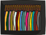
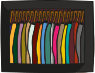
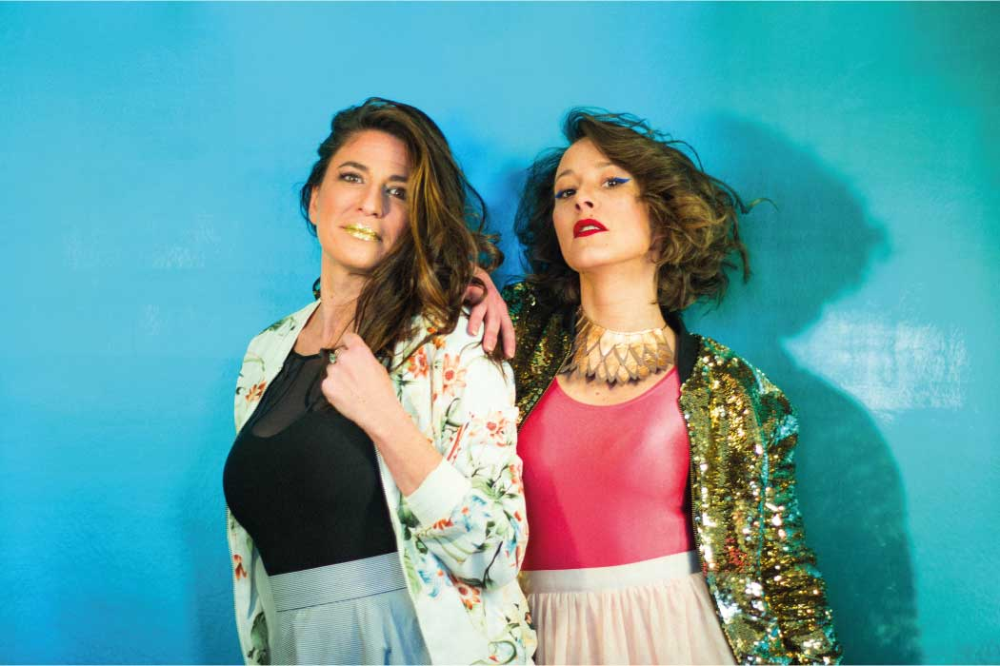

Parmi les différents événements (dont certain scénographiés) imaginés avec Künste, nous avons créé un catalogue Team Building.
 Télécharger le PDF
Télécharger le PDF


 



 -->
-->


Parmi les différents événements (dont certain scénographiés) imaginés avec Künste, nous avons créé un catalogue Team Building.
Télécharger le PDF
Les photos "officielles" de Künste, mon ancienne boîte, une définition du système D : pour la réalisation de ce photocall, j'ai acheté deux grandes feuilles que j'ai peintes (dans ce bleu "sirène" : j'ai du retourner au magasin acheter un deuxième tube parce que j'avais vu trop petit) puis scotchées l'une à l'autre. Afin de créer un véritable fond de photobooth, j'ai accroché ces feuilles à l'aide de cintres pantalons, eux-mêmes pendus sur une ficelle tirée le long d'un mur.

En face de ce fond, j'ai réuni la totalité des lampes présentes dans mon appartement, ainsi que le ventilateur (pour l'effet "cheveux au vent).
Pas de pied pour l'appareil photo : une chaise et quelques livres épais ont fait l'affaire. Pour le maquillage, un petit tour dans les bacs de fin des soldes chez Sephora aura suffit à faire quelques trouvailles colorées.
J'ai imaginé tellement de pop-up stores (avant de réaliser que la plupart des clients potentiels préfèrent les concevoir eux-mêmes).
Pour des boutiques de vêtements (imaginez un mur de culottes), ou bien pour des concept-stores (une jungle urbaine dans laquelle se distingue un sweat). J'ai imaginé des pop-ups de vacances (achetez vos lunettes de soleil/de vue en allant à/revenant de la plage). Nestore, Meuf, La Fourchette, Lunettes pour tous, etc. J'ai aussi pensé à créer un pop-up là où on ne l'attend pas (une poussette Concord au milieu de Fleux ou de Merci).
Télécharger le PDFUn exemple de différents événements pensés comme des "packages" à destination des festivals.
Télécharger le PDFJ'ai été illustratrice. Même si le lien avec la déco ne semble pas évident, je le fais sans problème : mes illustrations montrent une partie de ma vision de la vie ainsi qu'un morceau de mon univers. Le lien ci-dessous emmène vers l'époque 2015-2016...
Lien vers mon ancien siteGeorges tech : ma boîte actuelle. Je suis Customer Care, voici ce que j'apprends chaque jour (typologie des users de Georges, leur réaction en fonction de l'UX et de l'univers par Georges, leurs attentes et déceptions vis à vis de ce qui est annoncé et par rapport à leur expérience, le rythme effréné d'une startup qui va tout éclater...
Un des projets réalisés avec Künste pour Devernois : apporter un coup de jeune dans une boutique du centre-ville de Lyon, pas assez fréquentée au goût du siège. Pour résoudre ce problème, nous avons fait intervenir une artiste pour une réalisation de fresque et pris les clefs de la boutique tout un weekend afin de repimper un peu le merchandising et la déco. Le changement des lumières, le fait de ressortir des collections plus osées, quelques manches roulottées et une fresque arty : toutes ces petites actions que nous avons mises en place ont permis de servir l'objet de notre visite !

Chanel : j'étais obligée de faire allusion à l'univers de la mode. Chanel parce que je suis particulièrement sensible à la scénographie de leurs défilés et parce que j'admirais tellement la grâce de Gabrielle quand j'étais adolescente (et toujours aujourd'hui). Mais plus largement, je nourris une passion pour la mode et j'aime vraiment les tissus, costumes et habits.
Mon tout premier projet officiel... J'ai imaginé le Vidéomaton dans le cadre des Nuits Sonores 2014, c'est justement pour réaliser cet événement que j'ai monté ma première structure : une association au doux nom de Marcel.Marcel (named after mon hamster imaginaire).
"DIY Vidéomaton" était un projet imaginé dans le cadre des Extras des Nuits Sonores 2014 : un jardin, un bar, de la musique (de qualité), une pile de télévisions cathodiques, et une tente dans laquelle nous avions installé des caméras, des ordinateurs, un fond vert, un retour écran et des costumes. Les visiteurs venaient se faire filmer dans une scène de leur film préféré, et nous montions la vidéo instantanément pour leur fournir sur clef/internet. Les vidéos étaient diffusées sur les vieilles télévisions qui ornaient la scène.
J'ai présenté mon idée et après qu'elle ait été sélectionnée, j'ai découvert l'organisation d'événements : fabriquer un mini studio à fond vert, pour illustrer l'idée en visuel officiel de communication, avec des morceaux de tissus de plastique et boites de médicaments, faire du prosélytisme auprès de tous mes potes intermittents pour qu'ils participent au projet (parce que je ne sais pas tout-à-fait monter une scène en plein air ou faire les réglages de régie scène, par exemple), trouver des financements, faire de la comm même sans moyens, convaincre la totalité de mes connaissances de venir au moins pour boire une bière pour rentabiliser, inscrire pas moins de 30 personnes en bénévoles, inviter des artistes à jouer gratuitement, oublier de payer la SACEM, négocier le catering avec un foodtruck qui pourrait vendre sur place, emprunter des lights à mon prof de fac de ciné (qui m'appelle la veille pour me dire qu'elles ont été cassées par un étudiant), ne plus dormir, passer la journée de l'événement sous la pluie, ramasser les mégots dans l'herbe la nuit (à la lumière des téléphones) parce que nous étions sur un espace vert et que la Ville nous surveillait...
En voir plus sur le Vidéomaton :
Wonderland Beat Boat : un autre projet de Marcel.Marcel, également dans le cadre des Nuits Sonores, deux ans après le Vidéomaton. Wonderland Beat Boat a été réalisé avec une meilleure organisation, un peu plus de maturité (et cette fois-ci, un soleil bien présent). Le concept : du hip-hop et du rap en concert live de midi à minuit sur une péniche dans le centre-ville de Lyon, une scénographie Alice in Wonderland, et de la healthy food (et plein de bières aussi obviously).
Pour trouver des financements, nous avons du créer une campagne KissKissBankBank pour Marcel.Marcel (je n'ai jamais autant harcelé mes amis pour avoir de l'argent. On m'a momentanément surnommée "harcèle.harcèle"), pour laquelle nous réalisions quelques "vlog" à deux afin de tenir au courant nos kissbankers (promis, j'en mets une ou deux ci-dessous, tant pis pour ma dignité).
Mais même avec un peu de sous, comme je trouvais chouette l'idée de réaliser une scénographie "forêt", nous avons du fabriquer des arbres en papier mâché et cage à poules. Nous avons dévalisé les Emmaüs de la région pour acheter l'intégralité des théières et tasses kitsch, et avons conçu bien trop de boules en papier crêpon vert (les feuillages. Nous avons rencontré des problèmes de négociation avec les Nuits Sonores qui voulaient absolument nous faire installer des crash barrières pour éviter que le public ne tombe dans l'eau...Nous avons fait traîner des voitures trop près du sol parce que trop pleines de fûts, nous avons loué un garde-meuble (1er mois à 1€) pour stocker ces fûts pleins et vides, nous avons étudié (ou contourné, je sais plus) les règles d'hygiène pour pouvoir vendre de la nourriture préparée par nos soins.
Niveau management, l'équipe de bénévoles était super efficace parce que j'avais mis en place des responsables de zones et des roulements, et ça marche hyper bien. Et contrairement au Vidéomaton, nous avons fait du bénéfice sur cet événement !
Plus d'infos sur l'événement :
Des photos :